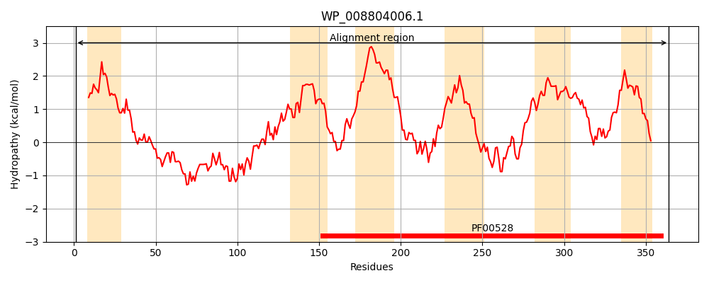
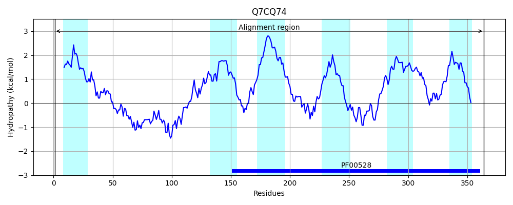
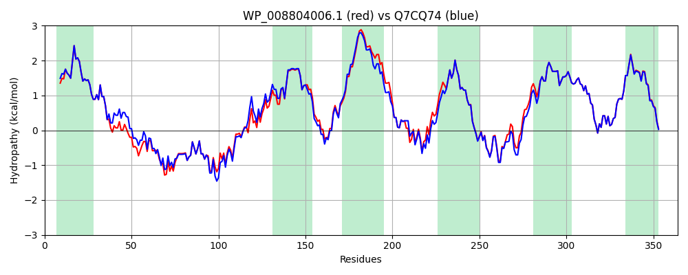

Hit Accession: Q7CQ74
Hit TCID: 3.A.1.5.24
Hit Description: gnl|BL_ORD_ID|15421 gnl|TC-DB|Q7CQ74|3.A.1.5.24 Putative ABC-type dipeptide/oligopeptide/nickel transport systems, permease component - Salmonella typhimurium.
Mach Len: 364
e:0.000000
Query TMS Count : 6
Hit TMS Count: 6
TMS-Overlap Score: 6.950000
Predicted Substrates:CHEBI:7990;peptide
BLAST Alignment:
Score: 1710 , Bit scores: 663 bits, E-value: 0.0e+00, Alignment length: 364, Percentage identity: 91
Query: 1 MGSYLIRRLLLVIPTLWAIITINFFIVQIAPGGPVDQAIAAIEFGQHGGMPGAGDGGMGASHARTGAGNISEGHYRGGRGLDPEVIAEITHRYGFDKPLHERYLKMLGDYLRFDFGDSLFRSASVLQLIKDSLPVSVSLGLWSTLIIYLVSIPLGIRKAVSNGSRFDIWSSTLIIIGYAIPAFLFAILLIVIFAGGSYFDLFPLRGLVSPNFDTLPWYQKILDYLWHITLPVLATVIGGFAALTMLTKNSFLDEIRKQYVVTARAKGVGEKQILWGHVFRNAMLLVIAGFPATFISMFFTGSLLIEVMFSLNGLGLLGYEATVSRDYPVMFGTLYIFTLIGLLLNIVSDISYTLVDPRIDFEGR 364
MG+YLIRRLLLVIPTLWAIITINFFIVQIAPGGPVDQAIAAIEFGQ G +PGA G+ ASHA+TG GNIS+ HYRGGRGLDPEVIAEITHRYGFDKPLHERY KML DYL FDFGDSLFRSASVL LIKDSLPVS++LGLWSTLIIYLVSIPLGIRKAV NGSRFD+WSS IIIGYAIPAFLFAILLIV FAGGSY+D+FPLRGLVS NFDTLPWYQKI DYLWHITLPVLATVIGGFAALTMLTKNSFLDE+RKQYVVTARAKGV EK ILW HVFRNAMLLVIAGFPATFISMFFTGSLLIEVMFSLNGLGLLGYEATVSRDYPVMFGTLYIFTLIGLLLNI+SDISYTLVDPRIDFEGR
Sbjct: 1 MGAYLIRRLLLVIPTLWAIITINFFIVQIAPGGPVDQAIAAIEFGQGGALPGASGEGVRASHAQTGVGNISDSHYRGGRGLDPEVIAEITHRYGFDKPLHERYFKMLRDYLSFDFGDSLFRSASVLTLIKDSLPVSITLGLWSTLIIYLVSIPLGIRKAVHNGSRFDVWSSAFIIIGYAIPAFLFAILLIVFFAGGSYYDIFPLRGLVSANFDTLPWYQKITDYLWHITLPVLATVIGGFAALTMLTKNSFLDEVRKQYVVTARAKGVSEKNILWKHVFRNAMLLVIAGFPATFISMFFTGSLLIEVMFSLNGLGLLGYEATVSRDYPVMFGTLYIFTLIGLLLNILSDISYTLVDPRIDFEGR 364 | Protein Hydropathy Plots: |
|---|
|  |  |
Pairwise Alignment-Hydropathy Plot:
|
|---|
|  |